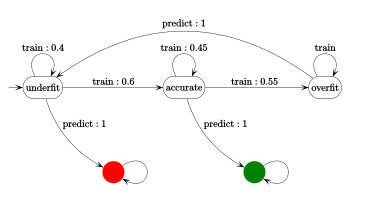

Parcours
Nathanaël Fijalkow, 06/03 et 06/04
Méthodes formelles pour la vérification ,
ouverture vers science des données
- Sept. 2012 - Oct. 2015 : Thèse cotutelle
Paris 7 - Varsovie (Colcombet / Bojańczyk) - Nov. 2015 - Juill. 2016 : Post-doctorat
Oxford (Ouaknine / Worrell) - Août 2016 - Déc. 2016 : Chercheur invité
Simons Institute Berkeley (Panangaden) - Jan. 2017 - ? : Chercheur
Alan Turing Institute of Data Science Londres
Implication dans la communauté scientifique :
Diffusion scientifique :
Publications : conférences (LICS, ICALP, STACS, ...), journaux (LMCS, ToCL, TCS,...)Exposés invités : AutoMathA, CasstingDéveloppement logiciel : ACME, Stamina,Flides Encadrement d'étudiants : Paris, Varsovie, Oxford, LondresProjets de recherche : ANR (FREC,STOCH-MC ), ERC (SOSNA, GALE, AVS-ISS)Organisation d'évènements scientifiques : conférences (Highlights ), séminaires (Paris, Oxford, Berkeley), workshops (GT-ALGA)
Diffusion scientifique :
- Responsable de projets
Animath (Kosovo, Laos) - Articles de vulgarisation (RMS)
Recherche
Domaine de recherche : méthodes formelles (Un résultat
La théorie prostochastique
Approche
Les automates probabilistes
Rabin, 1963 Le problème de la valeur 1
Contexte
L'algorithme du monoïde de Markov

Théorie prostochastique
Théorème (STACS'16, Theoretical Computer Science'17)
L'algorithme du monoïde de Markov répond OUI
si, et seulement si,
il existe une suite polynomiale $(u_n)_{n \in \mathbb{N}}$ tel que $\lim_n \mathbb{P}(u_n) = 1$
La suite $((a^n b)^n)_{n \in \mathbb{N}}$ est
La suite $((a^n b)^{2^n})_{n \in \mathbb{N}}$ ne l'est pas
Le monoïde prostochastique libre
Théorème
- $\mathbb{P} A^*$ est le complété de $A^*$, c'est un monoïde compact
- Toute suite de mots est interprétable dans $\mathbb{P} A^*$
- Le problème de la valeur $1$ est équivalent au problème du vide dans $\mathbb{P} A^*$
- La classe des suites polynomiales forme une structure algébrique (monoïde de stabilisation)
Projet
Incertitude pour les systèmes stochastiques
Robustesse
Simulation
en ligne
Rabin, 1963 : comment
Vœux d'affectation
Affectation dans un laboratoire d'informatique (concours 06/03)
LaBRI, Bordeaux, équipe Méthodes Formelles
Systèmes probabilistes : Hugo Gimbert (ANR Stoch-MC),Data Science (streaming, bases de données) : Olivier Gauwin, Gabriele Puppis (ANR ExStream),Vérification : Jérôme Leroux, Anca Muscholl, Thomas Place, Igor Walukiewicz, Marc Zeitoun
IRISA, Rennes, équipe SUMO
Systèmes probabilistes : Nathalie Bertrand, Blaise Genest, Ocan Sankur (ANR Stoch-MC),Théorie du contrôle : Eric Fabre, Hervé Marchand,Vérification : Sophie Pinchinat (équipe Logica)
Affectation dans un laboratoire de mathématiques (concours 06/04)
J.A. Dieudonné, Mathématiques et Interactions, Nice
Deux équipes :
-
Algèbre, Topologie et Géométrie : Sorin Dumitrescu, François-Xavier Dehon -
Probabilités et Statistiques : Raphaël Chetrite, Patricia Reynaud-Bouret
Présentation produite avec Flides
HTML5 et Javascript
Navigation :- Fléche droite ou bas : suivant
- Fléche gauche ou haut : précédent
- Barre d'espace : animation
- Entrée : afficher tout le contenu d'un transparent
- Shift : vue globale
- Retour arrière : initialisation
- Clic gauche : aller au transparent